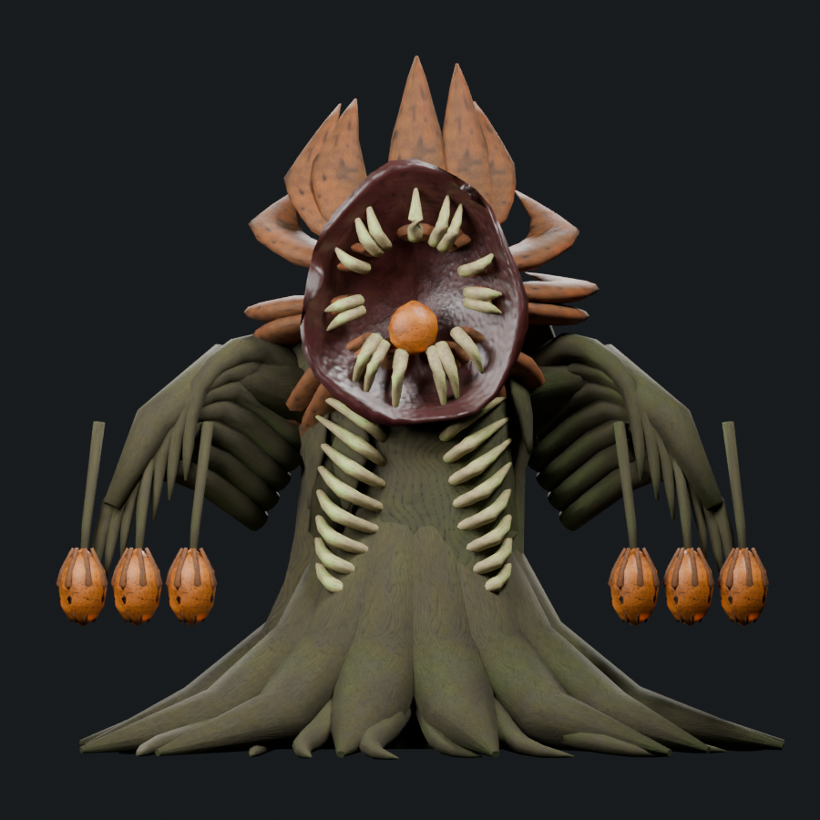
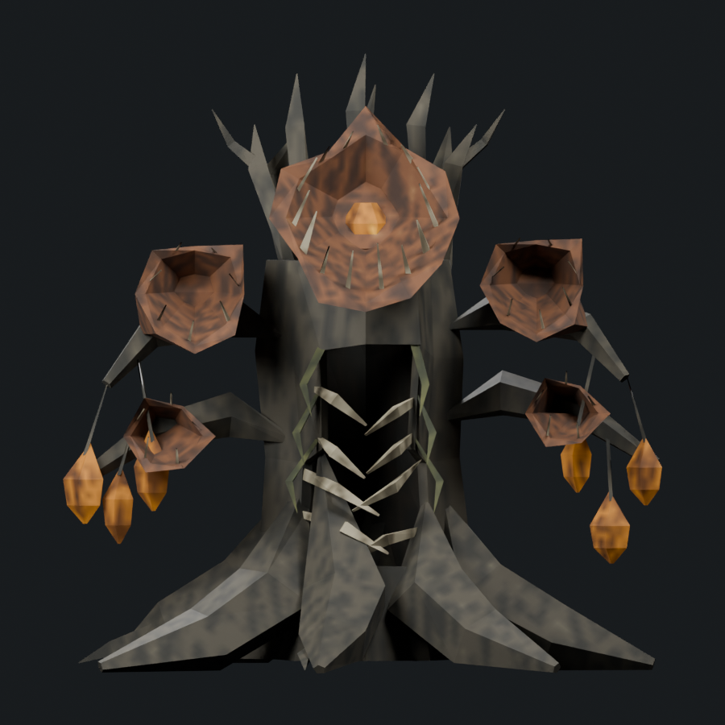
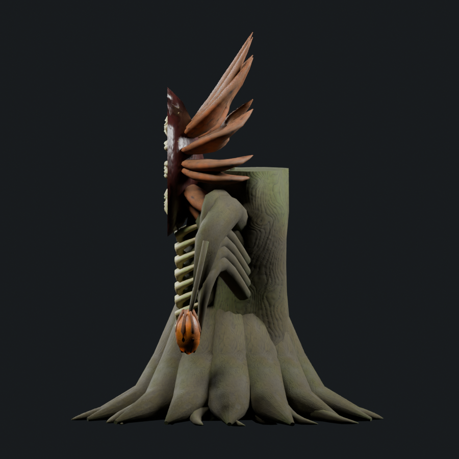
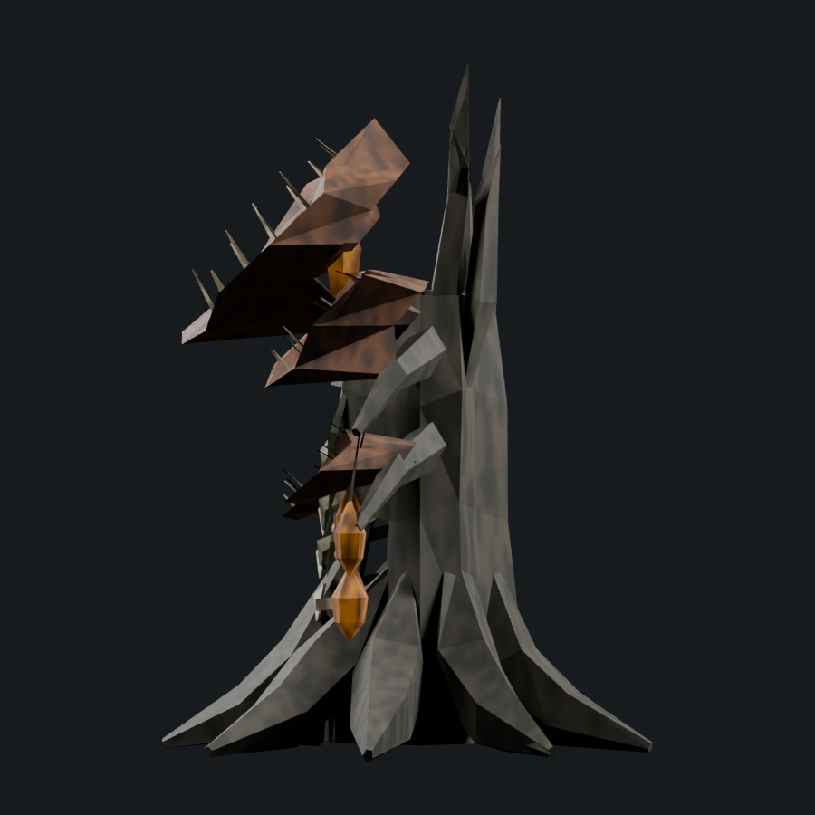

Editable art study; not accepted or installed. The adequate-boss tally remains 1/6. Offline geometry checks and these renders do not establish native animation, collision or frame cost.
Portable skinned model · Editable Blender source · Changes, measurements and remaining gaps · Saved-source verification
2,046 triangles / native donor 1,422 / soft cap 2,133; one mesh/material and four packed 512px maps. Historical models are re-rendered from saved sources with exact current cameras; native donors use the same directions/light recipe with normalized framing. Painted views have their own perspective.




Actual extracted Greydwarf Shaman; 1,422 triangles. Original seven-bone Corpse Orchard study hierarchy and five clips are retained separately from native acceptance.
This starts Carrion Crown refinement; it is not adequate art acceptance. The cups still need more reference-specific overlapping torn sepal shapes and the body needs denser crooked timber, attached tissue, less regular rib/branch rhythms, clearer porous seed forms and more deliberate bark/lichen. The source remains a compact anatomy study, with native deformation and performance unverified.